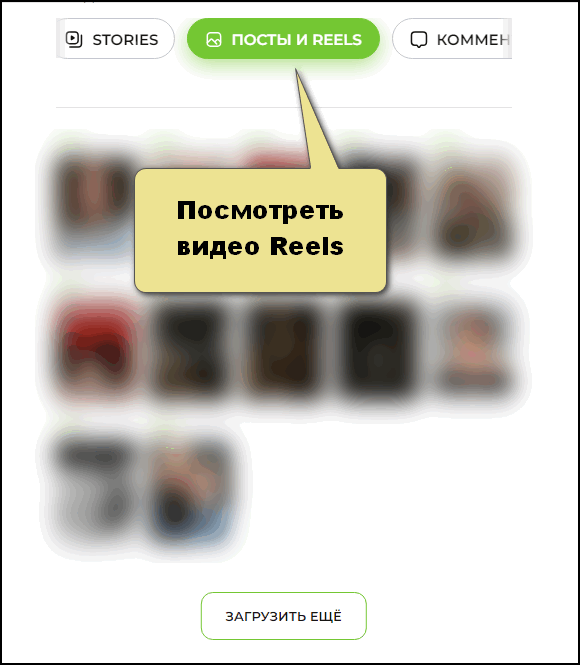
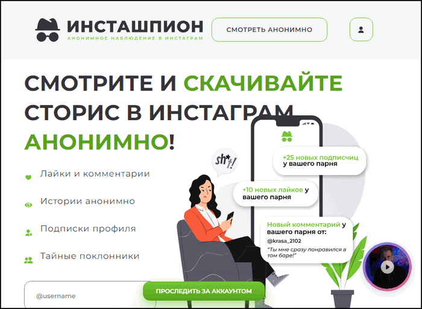
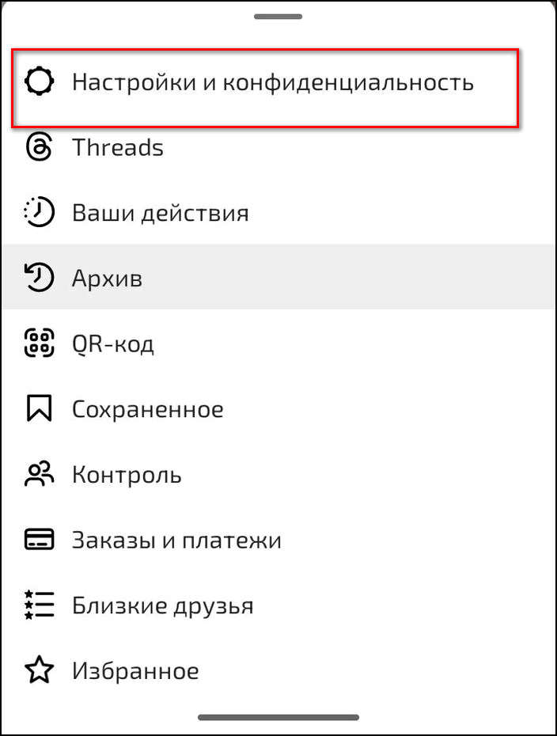
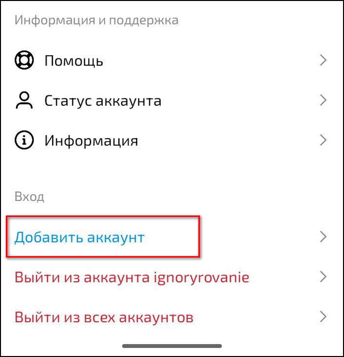
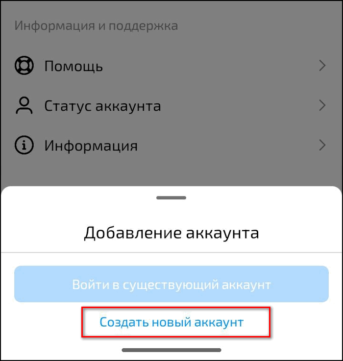
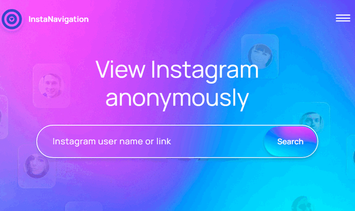
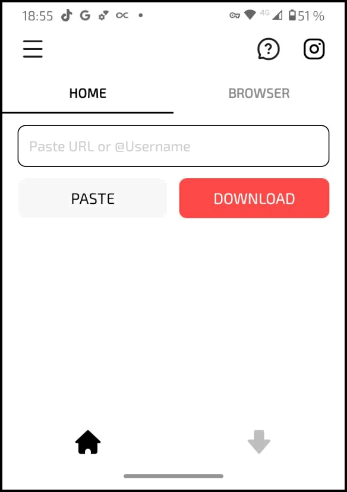
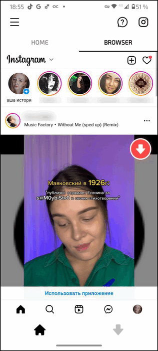

Как смотреть Рилс в Инстаграме анонимно онлайн

Смотреть Рилс в Инстаграм* анонимно возможно через онлайн-сервисы, использовать раздел «Поиск» или создать дополнительную учетную запись. Раздел отображает посетителей в основном в статистике, через комментарии и лайки.
Особенности раздела Reels
Reels – это короткие видеоролики, которые можно размещать в общий доступ и тем самым повышать активность в профиле. Максимальная продолжительность клипов составляет 3 минуты, но в основном используют 15 секунд. Рилс не показывает зрителей, отображает только тех, кто поставил лайки или отправил комментарий. В подробной информации о ролике можно узнать о количестве просмотров, а статистике для «Бизнес профилей» откуда пришла аудитория, география, половая принадлежность и возраст. Другие особенности:
- возможность скачать видеоролик и управлять после размещения;
- подробная статистика по количеству запусков, продолжительности просмотров и выходам из публикации;
- общее число просмотров даже без аккаунта Автора;
- трендовая музыка, которая быстро выводит запись в ТОП.
Поэтому узнать точно, кто просматривал Рилс – не получит ни у владельца личного, ни у авторов. Но проблемы с просмотром могут возникать, если пользователю нужно перейти к клипам без предварительной регистрации в социальной сети.
Анонимный просмотр: ТОП-5 способов
Смотреть Рилс в Инстаграме* онлайн возможно с помощью мобильных приложений, сервисов. Чтобы пользователю смотреть чужие клипы и не отображаться в статистике – можно создать дополнительный профиль или же попробовать перейти к записям без авторизации. У каждого из этих способов есть особенности в применении. Основные варианты, как посмотреть Рилс:
- создать дополнительный аккаунт;
- использовать сервис Инсташпион. Удобный вариант, как следить за чужой страницей без авторизации в своем Инстаграм*;
- мобильные приложения, которые демонстрируют профиль нужного человека (возможна утечка данных);
- сервис Инстанавигатор. Показывает контент, на который пользователь отправил ссылку (не всегда работает);
- попросить друзей, чтобы те отправили ссылку и перейти к записи без предварительной авторизации.
Наиболее эффективные – Инсташпион и просмотр с помощью дополнительного аккаунта. Пользователь максимально защищает свою анонимность и может даже подписываться, мониторить другую страницу. Инсташпион дает возможность смотреть Рилс без регистрации в Инстаграм*, на данный момент это ТОПовый вариант
№1 Инсташпион – наблюдение за другим человеком
С помощью сервиса Инсташпион можно следить за профилем другого пользователя, включая наблюдение за гостями и посетителями аккаунта. Его задача в сборе данных и анализе чужой учетной записи. Пользователь может подключить не одну цель, а сразу несколько и наблюдать за каждой отдельно.
 Разделы и возможности сервиса:
Разделы и возможности сервиса:
- лайки и комментарии. Кому пользователь поставил отметки «Нравится» и кому отправил. То же и с откликами;
- поклонники. Кто посещал аккаунт пользователя;
- Stories и Reels. Все опубликованные записи, которые можно посмотреть в данный момент;
- подписки и подписчики;
- публикации. Фото и видеозаписи, доступные к просмотру.
При первом просмотре нужно ввести никнейм человека, за которым будет наблюдение. Инсташпион покажет всех с похожими персональными данными. После – запустить анализ и подождать, пока обновятся данные.

Чтобы пользоваться Инсташпионом необязательно регистрироваться в Инстаграм*. Сервис работает без привязки к учетной записи. Кроме наблюдения за одной страницей, можно выбрать тариф мониторинга сразу за несколькими: от 3 до 20 штук.
Как посмотреть Рилс анонимно:- Зайти в Инсташпион – ввести на главной никнейм аккаунта.
- Появится аватарка – подтвердить сбор данных.
- Подождать, пока информация появится.
- Перейти в подраздел: «Reels».
Доступ к сервису возможен с мобильной и компьютерной версии. Чтобы просматривать короткие ролики, достаточно любого современного браузера, обновленного к последней версии.
№2 Отправить ссылку на видео
Если друзья или знакомые отправят ссылку на Рилс – его можно посмотреть без авторизации. Но такой способ доступен только с компьютерной версии. В мобильной пользователю предложат авторизоваться и скачать приложение, прежде чем он сможет просматривать контент. Что нужно, чтобы получить ссылку:
- знать никнейм нужного человека, где размещен Reels;
- попросить знакомого, чтобы отправил видео;
- иметь доступ к компьютеру или ноутбуку, чтобы перейти в социальную сеть;
- любой современный браузер.
Воспользоваться вариантом:
- Отправить знакомому никнейм и попросить ссылку на Рилс.
- Пользователь должен перейти в чужой аккаунт и нажать по кнопке: «Поделиться».
- Ссылка – скопировать её и отправить в любом мессенджере.
Получившему, нужно разлогиниться (если ранее он заходил в Инстаграм* с компьютерной версии) и перейти по полученному адресу.
№3 Дополнительный аккаунт
В социальной сети можно создавать несколько аккаунтом и переключаться между ними. Чтобы создать еще одну учетную запись, пользователю понадобится номер телефона. Как сделать еще одну страницу в Инстаграм* в 2023:
- Зайти в социальную сеть с помощью приложения.
- Нажать три полоски сверху – Настройки и конфиденциальность.

- Вход – Добавить аккаунт.

- Ввести номер телефона – придумать никнейм, пароль.

Далее, нужно заполнить страницу минимальным контентом, придумать описание. Но учитывать лимиты, что для новых аккаунтов не более 5 публикаций в день. Потом найти нужный профиль и посмотреть Рилс. Этот способ подходит не только для открытых страниц, но еще и для скрытых. Можно подать заявку на подписку и возможно, искомый человек её подтвердит.
№4 Инстанавигатор: сервис для просмотра
Сервис Инстанавигатор работает на Андроид и на Айфоне, но не сохраняет предыдущие поисковые данные, в отличие от Инсташпиона. В него можно войти и выделено посмотреть сведения чужой страницы, зная изначально никнейм. Выполнить просмотр:
- Зайти в Инстанавигатор – ввести никнейм нужной страницы.
- Подождать, пока появятся данные.

- Выбрать раздел с просмотром Рилс.
Публикации можно скачать на телефон или компьютер. Основные возможности Инстанавигатора:
- смотреть Истории и публикации;
- Рилс и видео;
- просматривать общую информацию о странице.
После того как пользователь закроет вкладку с сервисом – собранные сведения о публикациях сотрутся. И в следующий раз нужно будет заново вводить ник человека.
№5 Мобильные приложения
С помощью приложений для загрузки Reels можно просматривать страницу и скачивать клипы. Это тот же анонимный просмотр, так как пользователь смотрит контент у себя в Галерее смартфона. Приложение для Android InSave позволяет открывать чужие аккаунты и просматривать записи, а также загружать их на устройство. Как это работает:
- Скачать и установить приложение из Play Market.
- Открыть и перейти в раздел Browser – авторизоваться в Инстаграм*.

- Нажать снизу по кнопке: «Поиск» - найти человека.
- Нажать по любой публикации – Ссылка.

- Переключиться на вкладку «Home» - вставить адрес.
- Подождать, пока клип будет загружен.
Приложение работает с любым типом контента из Инстаграма*: от Историй до IGTV. Загружает на мобильное устройство в высоком качестве.
Как узнать кто просматривал Рилс в Инстаграме*
В социальной сети нет отображения по просмотрам записи, но можно перейти к статистике и узнать, кто смотрел публикацию. Или же, посетитель мог неосторожно нажать лайк и тогда он появится в перечне тех, кто поставил отметку «Мне нравится». Владельцам бизнес аккаунтов доступно больше функций и у них в разделе «Просмотры» появятся те, кто подписан на страницу и переходил к контенту. Чтобы воспользоваться статистикой:
- Убедиться, что на странице подключен аккаунт Автора.
- Перейти к записи – нажать три точки сверху.
- Статистика – посмотреть данные по посетителям.
Такой вариант не показывает гостей, но помогает владельцу профиля в продвижении отображая сведения о потенциальной целевой аудитории. В особенности это важно для авторов, которые планируют продвигать услуги или продавать товар в Инстаграме*.